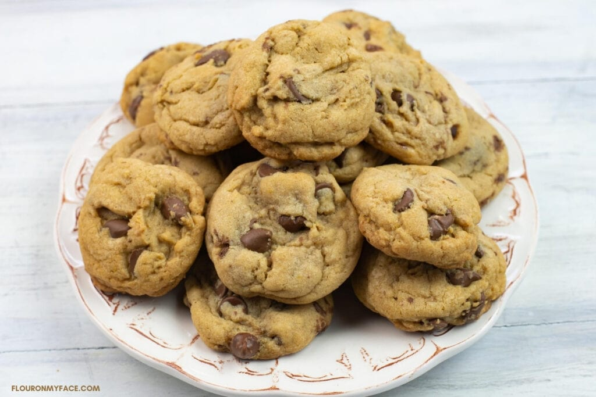
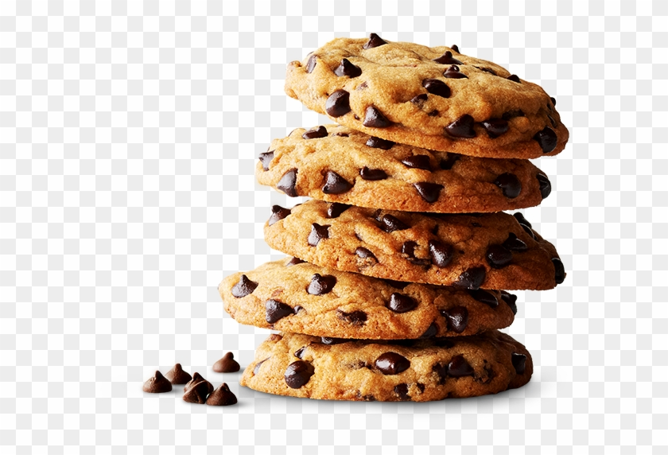

Simple cookie recipe
Introduction:
A easy simple cookie recipe that is inspired from tastes of lizzy. estimated prep time 15 minutes, estimated cooking and cooling time 15 minutes total 30 minutes. I chose this recipe because I have always enjoyed cookies and its easy and doesnt require that many steps.
Ingredients
- 1 cup (225g) softened butter
- 1 cup sugar
- 1 large egg
- 1 teaspoon vanilla extract
- 2 cups all-purpose flour
- ½ teaspoon baking soda
- ¼ teaspoon salt
- Optional: ½–1 cup chocolate chips or nuts
Instructions
- Preheat oven to 350°F (175°C).
- Cream butter and sugar together in a bowl until light and fluffy.
- Add egg and vanilla, mix well.
- In a separate bowl, mix flour, baking soda, and salt.
- Gradually combine dry ingredients into the wet mixture.
- Stir in chocolate chips if using.
- Drop spoonfuls of dough onto a lined baking sheet.
- Bake 8–10 minutes or until edges are lightly golden.
- Let cool for a few minutes before transferring to a rack.

